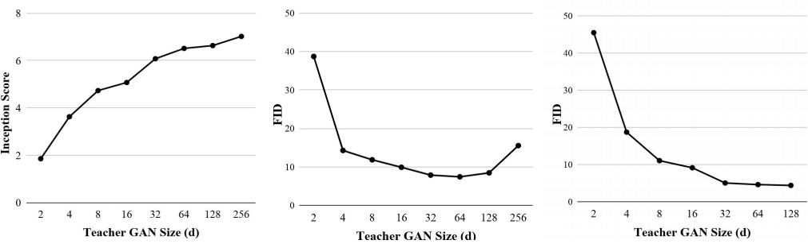
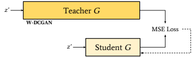
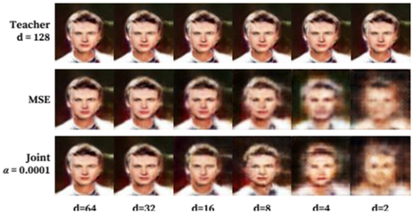

f _ w \left( . \right)
g _ \theta \left( . \right)
\min _ \theta \in \Theta \max _ w \in W \mathbbE _ \mathrm x \sim p _ d a t a \left[ \log \left( f _ w \left( \mathrm x \right) \right] \right.
+ \mathbbE _ \mathrm z \sim p _ z \left[ \log \left( 1 - f _ w \left( g _ \theta \left( \mathrm z \right) \right) \right) \right]
p _ g = p _ d a t a
f _ w \left( . \right)
p _ g
p _ d a t a .
p _ d a t a
p _ g
p _ g
p _ d a t a
p _ g
p _ d a t a
p _ g
p _ d a t a
f _ w \left( . \right)
\min _ \theta \in \Theta \max _ w \in W \mathbbE _ \mathrm x \sim p _ d a t a \left[ f _ w \left( \mathrm x \right) \right] - \mathbbE _ \mathrm z \sim p _ z \left[ f _ w \left( g _ \theta \left( \mathrm z \right) \right) \right]
d .
d ^ 2 .
erative setting. Serving as motivation for these adaptations is the idea that large over-parameterized networks have nicer loss landscapes than smaller ones, and are thus able to learn better quality mappings, regardless of whether an approxi- mately equivalent mapping exists for smaller networks. We experimentally validate these methods on several datasets and via a number of objective measurements. Lastly, we discuss the limit of compression in the GAN setting and how it appears in empirical results.
2. Background
2.1. Generative Adversarial Networks
GAN was first proposed as a two player min-max optimiza- tion problem between a discriminator and a generator as in (1) (Goodfellow et al., 2014). The generator is tasked with generating realistic examples that fool the discriminator while the discriminator learns how to differ- entiate between the real and the generated samples.
(1)
The optimization in (1) has a global minimum and the sys- tem converges when at which point, can- not classify a sample as being generated from or from Further, the optimal solution to (1) corresponds to minimizing the Jensen-Shannon (JS) divergence between the two distributions and (Goodfellow et al., 2014). However, training of GANs is often unstable because JS divergence is not well defined when and do not have the same support (Arjovsky et al., 2017). To solve the problem with using JS divergence, WGAN minimizes the Wasserstein's distance between and in place of the JS divergence(Arjovsky et al., 2017), which is well defined even when and have disjoint support. Specifically, WGAN attempts to solve the optimization problem in (2), where is a Lipschitz bounded function. (Arjovsky et al., 2017).
(2)
WGAN was used in place of regular GAN for most of our experiments due to its favorable characteristics. However, empirically, we noticed that WGAN does not work as well for the Celeb-A dataset, so we reverted to using regular GAN for all Celeb-A related experiments.
2.2. Knowledge Distillation
Knowledge distillation refers to the technique of transferring the knowledge learned, from an ensemble of networks to a single network, or from a network with high number of parameters, to a network with relatively low number of
parameters. We refer to the bigger network as the teacher network and the smaller network as the student network.
A student can learn to match any activation layer in the teacher network. Learning parameters from the final layer, called hard targets, lends itself to shorter training time but increased chance of over-fitting. The inputs to the softmax layer (logits) of the teacher network, referred to as soft tar- gets, on the other hand, have more descriptive information about the samples and give better generalization character- istics to the student network (Hinton et al., 2015), which makes training on soft targets more beneficial.
2.3. Over-parameterization of Networks
An over-parameterized network is described as one whose number of hidden units is polynomially large relative to the number of training samples (Allen-Zhu et al., 2018b). It has been shown that training a significantly over-parameterized GAN yields dramatically better results than those gener- ated from a smaller network (Brock et al., 2018). This may be explained by a finding that showed that the over- parameterization of neural networks creates optimized loss functions with many good minima spread throughout the en- tire loss landscape allowing for efficient training with alter- nating gradient descent (Allen-Zhu et al., 2018b) (Allen-Zhu et al., 2018a). This theory was bolstered by recent empirical studies of loss functions using visualization methods (Li et al., 2018). Therefore, it is necessary that a bigger net- work learn these mappings in a hyper-parameterized space before it can be distilled to a simpler model. Likewise, there has been empirical evidence that knowledge distillation, or model compression, is successful (Hinton et al., 2015) (Bucilu et al., 2006) (Yim et al., 2017). This success may be attributed to the aforementioned phenomena. Although training a teacher network might require a higher number of parameters, a reduced number of parameters is sufficient to describe the model with high fidelity.
3. Methods
The teacher (large, over-parameterized network) and student (small, few parameter network) GANs used either the orig- inal DCGAN architecture or a slightly modified DCGAN architecture (Radford et al., 2015), more closely resembling the WGAN (Arjovsky et al., 2017), referenced as the W- DCGAN.
The number of parameters in our networks is controlled by the depth scale factor, referenced throughout the paper as The overall number of parameters increases approximately linearly to
\widehat \Xi _ 2 0
\frac d d x _ 2 0
d .
d = 2 5 6
d = 6 4
d = 1 2 8
z ^ *
G
7 ^ 3
\mathrm S t u d e n t G
G
p \left( \mathrm y \right)
p \left( \mathrm y | \mathrm x \right)
H \left( \cdot , \cdot \right) ,
p \left( \mathrm y \right)
p \left( \mathrm y | \mathrm x \right)
I S = H \left( p \left( \mathrm y \right) , p \left( \mathrm y | \mathrm x \right) \right)
I f p \left( y \right) i s s i m i l a r a c r o s s c l a s s e s a n d p \left( y | x \right) i s v e r y c o n c e n -
w i l l b e h i g h .
p \left( \mathrm y \right)
p \left( \mathrm y | \mathrm x \right) ,
8
50
50
6
40
40
Inception Score
30
30
4
2
10
10
0
0
0
2
4
8
16
32
64
128
256
2
4
8
16
32
64
128
256
2
4
8
16
32
64
128
Teacher GAN Size (d)
Teacher GAN Size (d)
Teacher GAN Size (d)
Figure 2. The Inception Score and Frechet Inception Distance was used to evaluate the best teacher GAN, parameterized by the depth scale factor A high Inception Score is good and a low Frechet Inception Distance is good. From these results, we selected a teacher GAN size of for MNIST, for CIFAR-10 and for Celeb-A (left to right).
Teacher
W-DCGAN
MSE Loss
Student G
Figure 3. Student-teacher training framework with mean squared error (MSE) loss for student training. The teacher generator was trained using DCGAN framework (Radford et al., 2015) including WGAN modifications (Arjovsky et al., 2017). A mathematical analogy is shown in (3).
Z
MSE Loss
(1 - α)
Teacher
Joint Loss
z
Binary Cross Entropy Loss
DCGAN
α
Teacher D
Figure 4. Student-teacher training framework with joint loss for student training. The teacher generator was trained using DCGAN framework (Radford et al., 2015). A mathematical analogy is shown (4).
4. Analysis
In the case of classification networks, the performance can be measured by the classification accuracy. Unlike classifi- cation networks, GANs do not have an explicit measure for performance. The performance of GANs could be naively measured by human judgment of visual quality (Goodfellow et al., 2014). For example, one could collect scores (1 to 10) of visual quality from various subjects and average the scores to understand the performance of GANs. However,
the method is very expensive. The score could also vary significantly based on the design of the interface used to collect the data (Goodfellow et al., 2014). To evaluate the performance of GANs more systematically, the field has developed several quantitative metrics. Some of the popular metrics are Inception Score and Frechet Inception Distance (FID). Additionally, we used Variance of Laplacian to eval- uate the blurring artifacts inherent to compressing GANs trained on complex datasets.
4.1. Inception Score (IS)
There are two important things that we would like to see in images generated from good GANs. First, we would like it to generate diverse images. We would like to be relatively equal across different classes (Goodfellow et al., 2014). Secondly, given a generated image, we would like to be confident of the class in which the image belongs. Given a generated image x, we would like to be very concentrated in a particular class (Goodfellow et al., 2014). To take both of the desired qualities into account, the cross entropy, between and can be taken, otherwise known as the Inception Score.
(5)
trated in a particular class, then the cross entropy between the two distributions be high. Consequently, the Incep- tion Score
The Inception Scores makes a few assumptions. First, it assumes that the image can be classified yielding and but not all images can be classified. For example, in our experiments with the Celeb-A dataset, we could not use Inception Score because the data set does not have labels associated with them. Second, the Inception Score is


F I D ,
d = 2 5 6
\left. I S = 7 . 0 2 \right) ,
d = 6 4
\left. F I D = 7 . 4 2 \right) , a n d d = 1 2 8 \left( 1 2 , 6 5 2 , 4 1 7 \right.
\left. F I D = 4 . 3 9 \right) r e s p e c t i v e l y . A l l
\left( d \right)
\mathrm F I D \left( \mathrm S t u . \right)
\mathrm F I D \left( \mathrm S t u . \right)
d = 1 2 8
M S E
a = 0 . 0 0 0 1
d = 6 4
d = 3 2
d = 1 6
d = 8
d = 4
d = 2
\left( d = 1 2 8 \right) ,
\alpha = 0 . 0 0 0 1 .
Table 1. Compression Ratios and Image Quality Metrics for MNIST, CIFAR-10, Celeb-A. The respective metrics (IS, Inception Score and Frechet Inception Distance) are shown for both the student GAN (Stu.) compared to a regularly trained GAN (Reg.) of corresponding size. For MNIST, CIFAR-10, and Celeb-A, the ratio generator size of parameters, (3,573,697 parameters, parameters, teacher GANs were trained with a discriminator of corresponding teacher depth.
4
GAN Size
64
128
2
8
16
32
48
No. of Parameters
28,351
62,077
145,657
377,329
109,8721
216,4177
3,573,697
12,652,417
MNIST
Ratio
1669:1
762:1
325:1
125:1
43:1
—
13:1
4:1
IS (Stu.)
5.80
6.41
6.60
6.83
6.87
—
6.93
6.97
IS (Reg.)
1.86
3.63
4.73
5.07
6.08
—
6.51
6.63
CIFAR-10
Ratio
126:1
58:1
25:1
9:1
3:1
2:1
—
—
11.76
11.00
9.57
8.39
7.80
7.58
—
—
FID (Reg.)
38.72
14.28
11.85
9.90
7.86
7.64
—
—
Celeb-A
Ratio
446:1
204:1
87:1
34:1
12:1
6:1
4:1
—
12.15
10.97
8.78
6.29
4.84
—
4.54
—
FID (Reg.)
45.49
18.72
11.06
9.14
5.05
—
4.62
—
Teacher
Joint
Figure 11. Compression artifacts on the Celeb-A dataset from im- ages generated from a teacher GAN student GAN trained using MSE loss and student GAN trained using joint loss at smallest compressed GANs before significant observable degradation is present in the generated images. This obser- vation suggests a potential limit to compression depending on the complexity of the data set.
6.2. Our Contributions
Our work contributes to the topic of GAN compression. To summarize, we have made the following contributions in this paper:
· We have developed two compression schemes for GANs using a student-teacher learning architecture (Figures 3, 4).
. We have evaluated the proposed compression methods over MNIST, CIFAR-10, and Celeb-A datasets. Our results show that the quality of generated imagery is
maintained at high compression rates (1669:1, 58:1, 87:1 respectively) as measured by the Inception Score and Frechet Inception Distance metrics.
· We show that training a GAN of the same size with- out knowledge distillation produces comparatively di- minished results, supporting the conjecture that over- parameterization is both helpful and necessary for neu- ral networks to find a good function for GANs.
· We observe a qualitative limit to GAN's compression for all the aforementioned datasets. We conjecture that there exists a fundamental compression limit of GANs similar to Shannon's compression theory (MacKay, 2002).
7. Conclusion
Overall, we have demonstrated that applying the knowl- edge distillation method to GAN training can produce com- pressed generators without loss of quality or generalization. More specifically, we demonstrated that the student genera- tors are able to outperform a traditionally trained GAN of the same size and approximate the underlying function of the teacher generator for the whole latent space. This fur- ther supports the necessity for over-parameterization when training an effective generator prior to distillation. Further, a qualitative limit to GAN compression has been observed for MNIST, CIFAR-10 and Celeb-A datasets.
References
Allen-Zhu, Z., Li, Y., and Liang, Y. Learning and gener- alization in overparameterized neural networks, going
